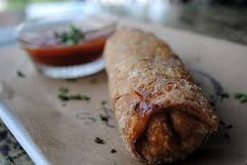

Cheesesteak Eggrolls Recipe
Home

Here is a cheesesteak eggroll recipe! In this step by step guide you'll learn how to make a simple savory cheesesteak eggroll.
Ingredients
- 1/2 lbs Thin sliced ribeye steak
- 1 tbsp olive oil
- 1/2 green bell peper
- 1/2 onion, diced
- Salt and pepper to taste
- 1/2 tsp garlic powder/li>
- 1 tsp worchestershire sauce
- 1 cup shredded mozzarella cheese
- 6-8 eggroll wrappers
- 1 egg, beaten (for sealing)
Cooking Steps
- Heat olive oil ina a pan on medium-high heat.
- Add onion and green pepper, saute for 3-4 minutes until softened.
- Add beef, season with salt, pepper, garlic powder, and worchestershire sauce.
- Cook until just browned, then remove pan from heat.
- Stir in Shredded cheese while hot so it melts in the filling.
Egg roll assembly
- Lay out a wrapper like a diamond
- Place 2-3 tablespoons of filling in the center.
- Fold the bottom corner up over the filling, fold in the sides, the roll tightly.
- Brush the top corner with beaten egg and seal
- Repeat!
Final cooking stage
Air fry at 375 degrees(F) for 10-12 minutes, turning halfway and spraying with oil for crispiness. Serve Hot with ranch!